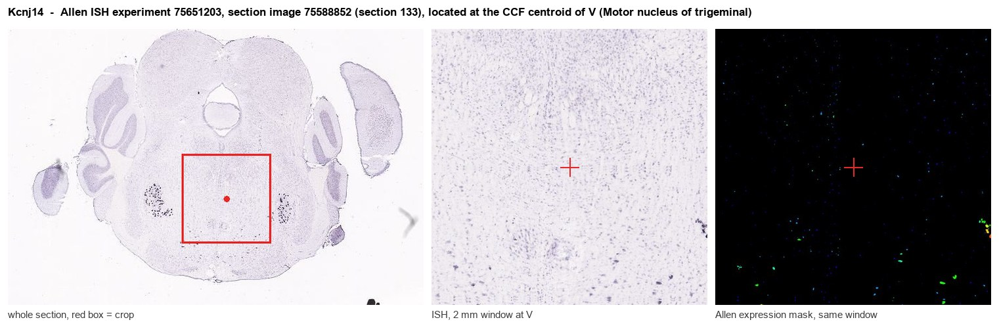
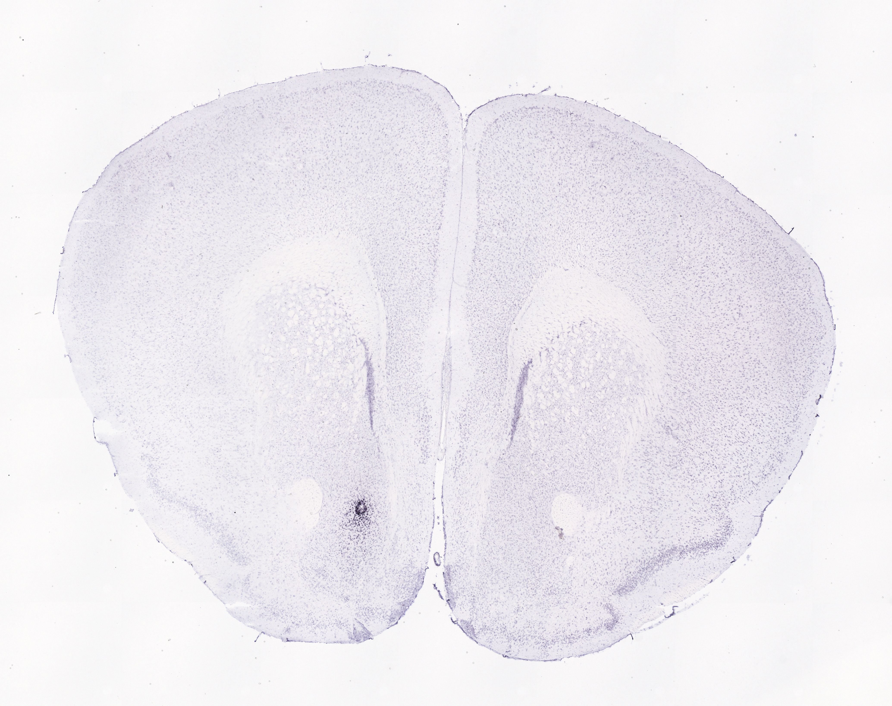
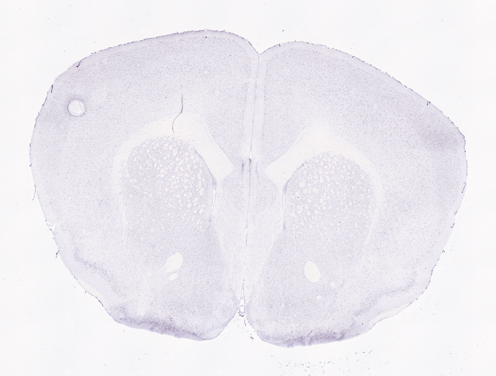
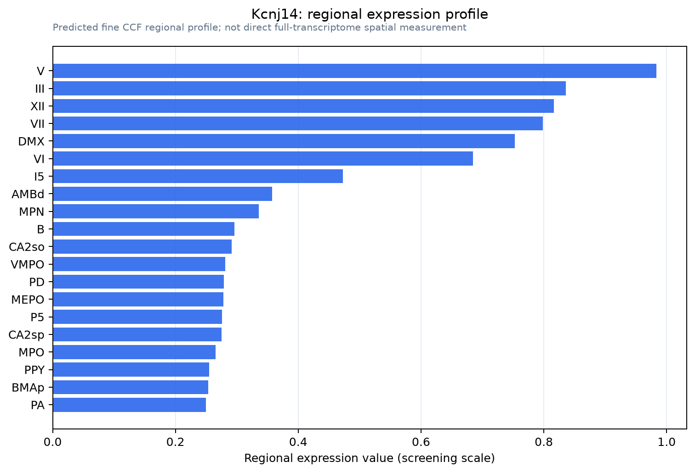

Kcnj14
ATP-sensitive inward rectifier potassium channel 14 (Inward rectifier K(+) channel Kir2.4) (IRK-4) (Potassium channel, inwardly rectifying subfamily J member 14)
Spatial tier: STRICT_EXCLUSIVE · Class: ION_CHANNEL · Top region: V (Motor nucleus of trigeminal) · Positive regions: 10/554
Function in V: evidence, prediction, innovation
- Gene function
- Kcnj14 encodes Kir2.4 (IRK4), a strongly inward-rectifying Kir2-family K+ channel. Its low-conductance (~15 pS) channels are 30-50-fold less sensitive to Ba2+ and Cs+ than other Kir2 subunits and are inhibited by extracellular acidification, stabilizing resting potential and firing threshold.
- Region function
- The motor nucleus of the trigeminal nerve contains alpha and gamma motoneurons for jaw-closing and jaw-opening muscles, driving mastication, biting and suckling under brainstem pattern generators.
- Published in this region
- expression only Töpert et al. (1998) cloned Kir2.4, whose transcripts are the most restricted brain Kir subunit, concentrated in special visceral (trigeminal motor, facial, ambiguus, accessory) and general somatic (oculomotor, abducens, hypoglossal) cranial motor nuclei but absent from the dorsal vagal nucleus; currents were dissected by low Ba2+ sensitivity in hypoglossal, not trigeminal, motoneurons. Human retinal Kir2.4 is pH-sensitive (Hughes 2000).
- Predicted function
- Prediction: Kir2.4 gives trigeminal motoneurons a Ba2+-resistant, pH-sensitive resting K+ conductance holding them hyperpolarized between masticatory bursts and relieved by acidification. Knockout or motoneuron-specific deletion should raise input resistance and excitability, giving faster or irregular chewing or jaw clenching; no behavioural test exists.
- Innovation
- ★★★☆☆ 3/5 The motoneuron-restricted expression has been known since 1998 yet no functional study in the trigeminal motor nucleus exists.
- Tools
- Ba2+ (Ki ~390 uM) and Cs+; pan-Kir2 blocker ML133; anti-Kir2.4 antibodies from retina; no Kcnj14 knockout or Cre driver; ChAT-Cre or Mnx1(Hb9)-Cre reach motoneurons.
- References
Direct evidence located at the region

Allen ISH experiment 75651203, section image 75588852 (section 133): the section that contains the CCF centroid of Motor nucleus of trigeminal according to the Allen image-to-atlas alignment (reference_to_image), with a 2 mm window around that point. Left: whole section, red box = window. Middle: ISH signal. Right: Allen's expression-mask view of the same window. open this image in the Allen viewer
Direct spatial evidence



Regional expression figure

Predicted WMB × fine-CCF profile; not direct full-transcriptome spatial measurement.
Spatial profile
Evidence and specificity
- Evidence status
- PREDICTED_FINE
- Direct sources
- None; predicted localization only
- Exclusive threshold
- 12 positive regions out of 554
- Spatial specificity
- 0.348
- Top-region fraction
- 0.077
- Filter status
- PASS
Interpretation limits
- Cell-type-to-region projection is imputed expression, not direct spatial measurement.
- Adult reference atlases do not establish stability across age, sex, strain, state, or disease.
- Transcript abundance does not guarantee protein abundance or genetic-tool performance.